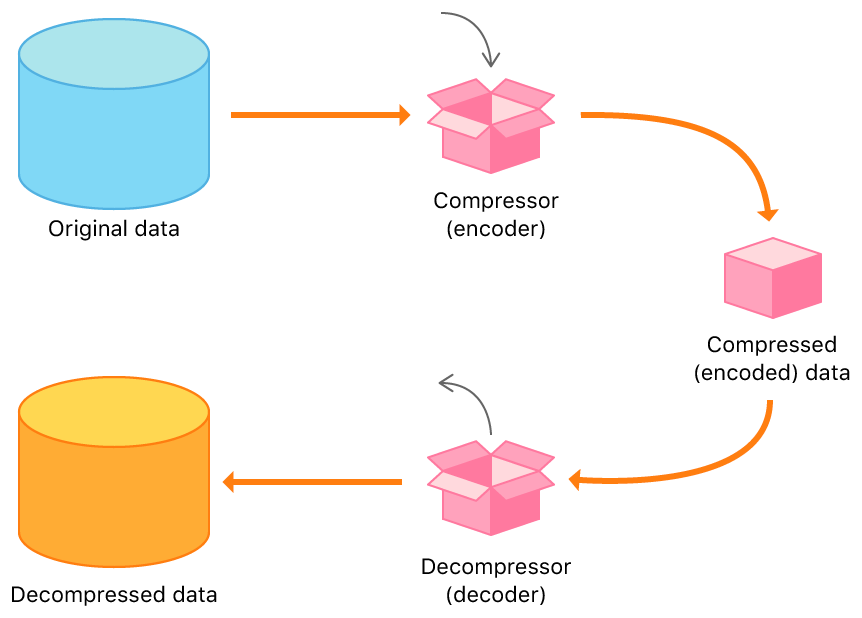

Element
Html element är själva din kod som är inuti två taggar, en start och en slut tag. Den definerar din sida och är vad som innerhåller din content och css. Sedan så brukar de också ha en class som ändrar dens egenskap. I detta fall är h1 innanför dessa symboler "< >" som bildar en tag. "class="title"" är själva egenskapen och det som är mellan tagarna är contentet som i detta fall är text. Detta tillsammans bildar ett element.
Html
Hypertext Markup Language eller Html förkortat. Är ett märkspråk för hypertext och är standarden med HTTP för WWW (World Wide Web). Därför använder sig alla sidor någon typ av html kod för att ansluta sig till WWW.

ID
Html id attributen specificerar ett id till ett element. Till exempel har du ett h1 (heading) element som du vill ändra fontet men vill inte påverka alla h1 element. Så kan du ge en av dem ett specifkt id som kommer bara ändra h1 med just det id. Oftas kommer ändra du ditt id i din stylesheet om inte du ska länka delar på din sida. Id attributen är inuti den första tagen.
Class
Classer är väldigt liknande id på att den ger en specifik egenskap till elementet. Men en class kan man ge en grupp olika eller samma element en egenskap medans id är specifik bara till ett element. Så den funkar på samma sätt att du kan ge den en egenskap som ändrar storleken eller fontet på en text. classer kommer du alltid ändra i din stylesheet.
Meta
Meta tagen definerar metadatan, som är informationen om datan. < meta> tagen ligger alltid inuti < head> tagen. Till exempel beskriver meta vem som har skrivit sidan, beskrivningen av sidan och hur det ska se ut för andra när det kommer till sidan. Läs mer om Meta på: W3schools.com
Responsive
En resposive sida är en sida som ändras så att den ser bra ut på alla enheter. Till exempel så ändras storleken på bilderna och texten för mobilen så det ser bra ut. Det finns flera sätt att göra en sida responsive men ett av dem är att använda sig av flexbox eller bootstrap.

http
När man surfar på webben så har varje sida någon http och WWW. WWW är när en webläsare körs på en online server, vilket ger tillgång för att andra ska söka. Http står för Hyper Text Trasfer Protocol och används för att överföra data från sidor till användaren. Så http kommunicerar med datorn via att skicka http Request och få http Responses
https
Https är en säkrad variant av http och står för Hypertext Transfer Protocol Secure. Det beyder att när man loggar in eller använder annan information om sig själv som att skriva in sitt kortnummer. Så vet man att informationen inte kommer bli stulen av andra användare på sidan. Https funkar med att informationen krypteras som du skriver in och bara ägaren av sidan kan dekryptera informationen. Detta funkar med hjälp av ett protocol som heter SSL eller TLS.

Compressed data
Compressed data är när koden har blvit om kodad på ett sätt som göra att färre informationsbärande enheter behövs användas. Detta är väldigt bra för att spara utrymme i disken och filer. Det är också väldigt bra för att göra tt sidan inte tar för lång tid att ladda in alla data.
CDN
CDN står för Content Delivery Network och är gjord för att få din sida att ladda in mycket snabbare. Med hjälp av att fördela nätverks servers runt om planeten med HTML, javascript och filer. Får du någon som bort långt bort att snabbt få in informationen av websidan och därmed laddar deras sidan in mycket snabbare. Förutom detta kan CDN också skydda mot attacker som DDOS. Denna sida använder sig av JQuery som finns i form av CDN.
Local bootstrap
Local bootstrap är när du har laddat ner bootstrap i ditt kodningsprogram. Detta ger dig tillgång att ta bort koden och göra förändringa. jämnförelse med CDN som är över internet och är inte nerladdat på datorn.
JQuery
JQuery är de mest populära javascript bibloteken. JQuery är gjort för att förenkla och gör det mycket tydligare när man byger sidor med javascript. Den gör flera långa linjor med kod till bara en kort och enkelt javascripts kod. Funkar på många liknande sätt som bootstrap men bara för javascript. Läs mer på: W3schools.com

Flexbox
Flexbox är en layout model inom HTML som ger dig tillgång att näst intill fritt röra runt lådor med saker på sidan. Detta ger en sida en bra struktur och gör den mycket snyggare. Då innan man var tvungen att göra flera rader av kod för att få en bild till mitten av sidan.
Grid
Grid är också en typ av layout model som hjälper dig designa din sida i ett slags rutnät. Det är en väldigt enkel layout som man använder för att slippa element som floats och positioning.

Code snippets
Code snippets är en term för en specifik bit av kod som är återanvändbar. Gör det mycket enklare än att skriva om koden flera gånger om.